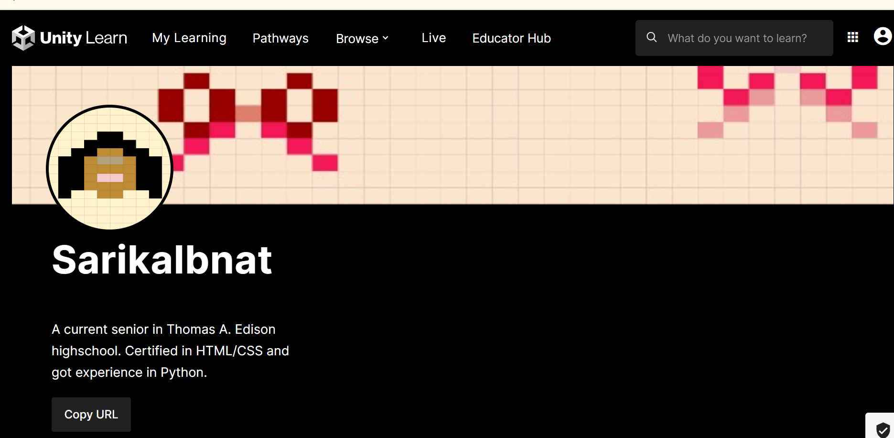

| Assignment Links | Brief Reflection |
|---|---|
|  | This is my Unity Account with a brief bio or description of my skills. I can use this account to sign in to the UnityHub or Editor. This is just where my personal info, projects or assets are mangaed, not where I built the games. |
| CFU #3 Passing the Flythrough Scene: I struggled a lot with these because navigating on unity is challenging and then my keyboard started acting strange too like some of the keys weren't doing what they are supposed to. | |
| Congressional App Challenge: For this assignment we individually brainstormed ideas for our Congressional App or if there was a way to improve the app from Infy App and submit that one. Had to reflect on what went well last year and what needs to be improved. | |
| Canva-User Personas: As a group, we came up with questions that we asked or classmates as highschoolers were our target audience and then came up with user persnas based off their responses. This indicates where seniors struggle with the college admission process and what support they need. | |
| What did you work on today: This was an assignment with updates about where we are with our Congressional App. We had a short timespan so this made sure we were on top of our tasks and allowed us to plan our next steps like getting on our wreframes. | |
| The Reflective Portfolio: We had to read an article that told the importance of reflecting on your work and by doing so, we will have more success in our future work/projects. Then, we had to answer the question that followed and also relate some of our answers to our experiences. |